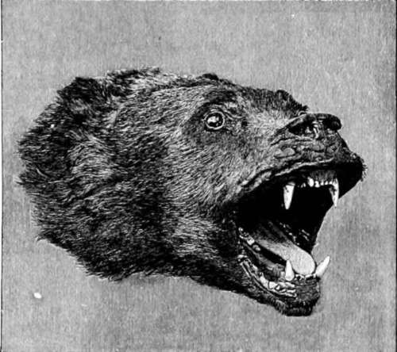
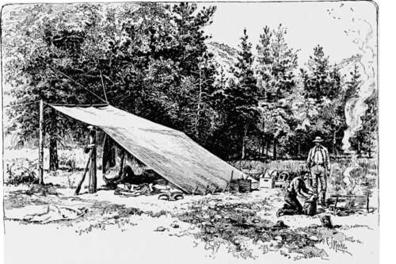

Camping And Hunting In The Shoshone. Part 3
Description
This section is from the book "Hunting", by Archibald Rogers. Also available from Amazon: Hunting.
Camping And Hunting In The Shoshone. Part 3
An ordinary hill of less than two thousand feet looks Alpine when you are near its base, if that base be hidden in fog and the crown be clear. Many who read this can doubtless recall experiences on misty mornings, when on the canoe, or lake-shore or river-bank, they looked up at cloud-girdled mountains that, when thus seen, seemed so vast in their proportions they could scarcely believe them to be the old companions of the night before. But these rocky solitudes seen as we saw them that morning, —well, I can liken them to nothing I know of. We were not an especially emotional party; but they did seem to us that morning, as they towered aloft into the limitless ether, to belong to another "land that is very far off."
Head of a Grizzly
Where can a more lovely series of mountain-lakes be found than those that lie hidden in the great forests that stretch for a distance of, say, one hundred and fifty miles by one hundred over that central plateau where rise the Yellowstone and Snake Rivers? Till within a few years the region was almost unknown. In 1868 I met a hunter who claimed to have seen a great lake, more than twenty-five miles long, and almost as broad, in the heart of the mountains, on whose margin great fountains of boiling water spouted, and where no Indian dared to go. Of course he yarned considerably about canons where lay the bones of herds of petrified bison, and gaping cracks whence steam and boiling mud rushed forth. Allowing, as you must allow out West, for the play of a hunter's imagination, there was a considerable substratum of truth in what he said; but none of us, and, so far as we could learn, no one that ever met him, believed a word of it. Of course the existence of the extraordinary region of the Upper Yellowstone was known to a few, but there was very little accurate or certain knowledge of it. Indeed, the policy that the Government still pursues in regard to this great Alpine region seems curiously stupid. At various points, commanding natural western highways, are stationed small military posts; but the officers and men condemned to live in them, from year's end to year's end, are not only not encouraged to make themselves ac-qainted with the intricacies of the vast mountain regions lying near them, but are so hampered by a cheese-paring policy that even a hunting-trip of a few weeks is almost an impossibility.
Now, an Indian outbreak may not be likely to occur in the future, but it is still far from impossible that it should occur. Were the Crows (who still have the best horses in the West, and claim perhaps three thousand warriors) to go on the warpath, there is no military force in that region that could prevent them reaching the mountains. Once there, for some months at least, they could subsist on scattered bands of cattle and game. Such an outbreak would be followed by terrible loss of life; for all the country is now studded with isolated ranches and small settlements, and to dislodge them from perhaps the most difficult natural fortress imaginable, with United States infantry, only accustomed to barrack-square tactics, and such cavalry as might be attainable, would be a costly task.
No smarter officers, no keener sportsmen, are to be found anywhere than can be found at our frontier posts, but, look longingly as they may toward the blue line on the horizon, transport is denied them; they are not, as a rule, men of large private means, and cannot afford to invest in transport for themselves, and so, if I may be pardoned the hackneyed quotation— metaphorically "Their limbs are bow'd, though not with toil, But rusted with a vile repose."
It is well known out West, that nothing but a lucky hit of one of its best guides saved from complete annihilation, during the Custer campaign, a very important command that had ventured after the Indians into the Big Horn Mountains. The Sioux corralled the soldiers, who were in great danger, and only escaped at last by night, on foot, leaving their fires burning and their horses tied in the timber. Thoroughly organized pack-trains used to be part of the establishment of all military posts near the mountains. Now almost all these have been broken up, the packers attached to them dismissed, and the very complicated gear that is absolutely necessary to carrying supplies on mule or on horseback is in such a state that it is, to all intents and purposes, useless for emergency service. Neither mules nor packers can possibly be secured in a hurry for such a work as a mountain campaign implies; and to send troops, no matter how skilful or how ably handled, into the field without them, would be to send them to defeat.
A Camping Outfit for Eight.
In a formation such as that of the Rocky Mountains, the unexpected is the common. A "divide" looks as though you could march a regiment along it; you get up there, and lo! it ends in a knife-edge; a great river swirls deeply and quietly at your feet; its pathway downward surely can afford you a trail upward. You come to a dead standstill in a mile or two; and the reverse of this is true. From Sunlight (a pretty name, I think, for a pretty place and a most forlorn little log shanty, of which I am in part the proud possessor) a long valley leads up to one of the grandest groups of peaks I know anywhere. This Sunlight is quite well known in the Clarke's Fork region. The old trail from Billings, on the Northern Pacific Railroad, to Cooke runs through it; and to go from the park to the Stinking Water country and Gray Bull, where there is now a considerable cattle industry, you must pass by Sunlight. Prospectors, the best of all mountaineers and explorers, are supposed to have gone over every foot of that valley and its bold sides. It used, too, to be a favorite resort of meat-hunters, when the first rush to the mines carried hundreds on to the head-waters of Clarke's Fork; and yet, for all this, no one ever believed that a pack-horse could be led up the mountain at its head and over into the park. Prospectors and hunters were fain to go back to Sunlight, and thence by Lodge Pole Creek round to Cooke Mines, and down by Soda Butte to the Yellowstone, a circuit of not less than seventy-five miles.
Continue to:
- prev: Camping And Hunting In The Shoshone. Part 2
- Table of Contents
- next: Camping And Hunting In The Shoshone. Part 4